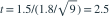

对 9 个对象分别测量调整前后指标，令差值为“调整后减调整前”。差值独立且来自正态总体，样本均值为 1.5，无偏样本标准差为 1.8。检验差值总体均值是否为 0。给定  ，双侧 5% 检验的结论为哪项？
，双侧 5% 检验的结论为哪项？
，双侧 5% 检验的结论为哪项？- At=0.833，不拒绝原假设
- Bt=2.5，不拒绝原假设
- Ct=0.833，拒绝原假设
- Dt=2.5，拒绝原假设
我已思考，展开答案与解析
正确答案：D
- 配对数据先化为差值样本，对差值均值作单样本 t 检验。

，自由度为 8。因 ，拒绝均值为 0 的原假设。
易错提醒不要把前后两组当作独立样本，否则会错误处理相关性。
原模拟卷 A · 模拟卷 A 第 43 题
原创